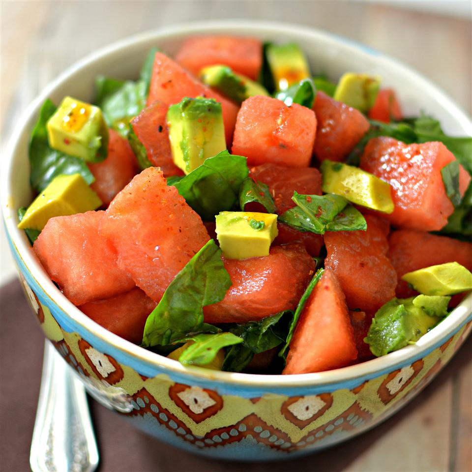

Description
This is a very healthy, yet delightfully different salad. A flavorful addition could be small slices of red onion.

Ingredients
- 4 cups cubed watermelon
- 4 cups fresh baby spinach, torn
- 2 large avocados - peeled, pitted, and diced
- ¼ cup walnut oil
- ¼ cup olive oil
- 1 lime, juiced
- ½ teaspoon sweet paprika
Original recipe yields 6 servings
Steps
- Combine watermelon, spinach, and avocados together in a bowl.
- Whisk walnut oil, olive oil, lime juice, and paprika together in a bowl; pour over watermelon mixture. Toss to coat.